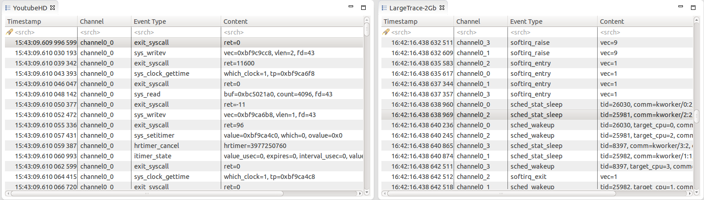

| LTTng | ||
|---|---|---|
|
|
|
|
| Installation | LTTng Tracer Control | |
The Tracing perspective is part of the Tracing and Monitoring Framework (TMF) and groups the following views:
The views are synchronized i.e. selecting an event, a timestamp, a time range, etc will update the other views accordingly.
The perspective can be opened from the Eclipse Open Perspective dialog ( Window > Open Perspective... > Other).
In addition to these views, the Tracing and Monitoring Framework (TMF) feature provides a set of generic tracing specific views, such as:
The framework also supports user creation of Custom Parsers.
To open one of the above Tracing views, use the Eclipse Show View dialog ( Window > Show View > Other...). Then select the relevant view from the Tracing category.
Additionally, the LTTng feature provides an LTTng Tracer Control functionality. It comes with a dedicated Control View.
The project view is the standard Eclipse Project Explorer. Tracing projects are well integrated in the Eclipse's Common Navigator Framework. The Project Explorer shows Tracing project with a small "T" decorator in the upper right of the project folder icon.
A new Tracing project can be created using the New Tracing Project wizard. To create a new Tracing select File > New > Project... from the main menu bar or alternatively form the context-sensitive menu (click with right mouse button in the Project Explorer.
The first page of project wizard will open.
In the list of project categories, expand category Tracing and select Tracing Project and the click on Next >. A second page of the wizard will show. Now enter the a name in the field Project Name, select a location if required and the press on Finish.
A new project will appear in the Project Explorer view.
Tracing projects have two sub-folders: Traces which holds the individual traces, and Experiments which holds sets of traces that we want to correlate.
The Traces folder holds the set of traces available for a tracing project. It can optionally contain a tree of trace folders to organize traces into sub-folders. The following chapters will explain different ways to import traces to the Traces folder of a tracing project.
To open a trace, right-click on a target trace folder and select Open Trace....
A new dialog will show for selecting a trace to open. Select a trace file and then click on OK. Note that for traces that are directories (such as Common Trace Format (CTF) traces) any file in the trace directory can be selected to open the trace. Now, the trace viewer will attempt to detect the trace types of the selected trace. The auto detection algorithm will validate the trace against all known trace types. If multiple trace types are valid, a trace type is chosen based on a confidence criteria. The validation process and the computation of the confidence level are trace type specific. After successful validation the trace will be linked into the selected target trace folder and then opened with the detected trace type.
Note that a trace type is an extension point of the Tracing and Monitoring Framework (TMF). Depending on the which features are loaded, the list of available trace types can vary.
To import a set of traces to a trace folder, right-click on the target folder and select Import... from the context-sensitive menu.
At this point, the Import Trace Wizard will show for selecting traces to import. By default, it shows the correct destination directory where the traces will be imported to. Now, specify the location of the traces in the Root directory. For that click on the button Browse, browse the media to the location of the traces and click on OK. Then select the traces to import in the list of files and folders.
Traces can also be imported from an archive file such as a zip or a tar file by selecting the Select archive file option then by clicking Browse. Then select the traces to import in the list of files and folders as usual.
Optionally, select the Trace Type from the drop-down menu. If Trace Type is set to <Automatic Detection>, the wizard will attempt to detect the trace types of the selected files. The automatic detection algorithm validates a trace against all known trace types. If multiple trace types are valid, a trace type is chosen based on a confidence criteria. The validation process and the computation of the confidence level are trace type specific. Optionally, Import unrecognized traces can be selected to import trace files that could not be automatically detected by <Automatic Detection>.
Select or deselect the checkboxes for Overwrite existing trace without warning, Create links in workspace and Preserve folder structure. When all options are configured, click on Finish.
Note that traces of certain types (e.g. LTTng Kernel) are actually a composite of multiple channel traces grouped under a folder. Either the folder or its files can be selected to import the trace.
The option Preserve folder structure will create, if necessary, the structure of folders relative to (and excluding) the selected Root directory (or Archive file) into the target trace folder.
If a trace already exists with the same name in the target trace folder, the user can choose to rename the imported trace, overwrite the original trace or skip the trace. When rename is chosen, a number is appended to the trace name, for example smalltrace becomes smalltrace(2).
If one selects Rename All, Overwrite All or Skip All the choice will be applied for all traces with a name conflict.
Upon successful importing, the traces will be stored in the target trace folder. If a trace type was associated to a trace, then the corresponding icon will be displayed. If no trace type is detected the default editor icon associated with this file type will be displayed. Linked traces will have a little arrow as decorator on the right bottom corner.
Note that trace type is an extension point of the Tracing and Monitoring Framework (TMF). Depending on the which features are loaded, the list of trace types can vary.
Alternatively, one can open the Import... menu from the File main menu, then select Tracing > Trace Import and click on Next >.
At this point, the Import Trace Wizard will show. To import traces to the tracing project, follow the instructions that were described above.
Traces can be also be imported to a project by dragging from another tracing project and dropping to the project's target trace folder. The trace will be copied and the trace type will be set.
Any resource can be dragged and dropped from a non-tracing project, and any file or folder can be dragged from an external tool, into a tracing project's trace folder. The resource will be copied or imported as a new trace and it will be attempted to detect the trace types of the imported resource. The automatic detection algorithm validates a trace against all known trace types. If multiple trace types are valid, a trace type is chosen based on a confidence criteria. The validation process and the computation of the confidence level are trace type specific. If no trace type is detected the user needs to set the trace type manually.
To import the trace as a link, use the platform-specific key modifier while dragging the source trace. A link will be created in the target project to the trace's location on the file system.
If a folder containing traces is dropped on a trace folder, the full directory structure will be copied or linked to the target trace folder. The trace type of the contained traces will not be auto-detected.
It is also possible to drop a trace, resource, file or folder into an existing experiment. If the item does not already exist as a trace in the project's trace folder, it will first be copied or imported, then the trace will be added to the experiment.
A trace package is an archive file that contains the trace itself and can also contain its bookmarks and its supplementary files. Including supplementary files in the package can improve performance of opening an imported trace but at the expense of package size.
The Export Trace Package Wizard allows users to select a trace and export its files and bookmarks to an archive on a media.
The Traces folder holds the set of traces available for a tracing project. To export traces contained in the Traces folder, one can open the Export... menu from the File main menu. Then select Trace Package Export
At this point, the Trace Package Export is opened. The project containing the traces has to be selected first then the traces to be exported.
One can also open the wizard and skip the first page by expanding the project, selecting traces or trace folders under the Traces folder, then right-clicking and selecting the Export Trace Package... menu item in the context-sensitive menu.
Next, the user can choose the content to export and various format options for the resulting file.
The Trace item is always selected and represents the files that constitute the trace. The Supplementary files items represent files that are typically generated when a trace is opened by the viewer. Sharing these files can speed up opening a trace dramatically but also increases the size of the exported archive file. The Size column can help to decide whether or not to include these files. Lastly, by selecting Bookmarks, the user can export all the bookmarks so that they can be shared along with the trace.
The To archive file field is used to specify the location where to save the resulting archive.
The Options section allows the user to choose between a tar archive or a zip archive. Compression can also be toggled on or off.
When Finish button is clicked, the package is generated and saved to the media. The folder structure of the selected traces relative to the Traces folder is preserved in the trace package.
The Import Trace Package Wizard allows users to select a previously exported trace package from their media and import the content of the package in the workspace.
The Traces folder holds the set of traces for a tracing project. To import a trace package to the Traces folder, one can open the Import... menu from the File main menu. Then select Trace Package Import.
One can also open the wizard by expanding the project name, right-clicking on a target folder under the Traces folder then selecting Import Trace Package... menu item in the context-sensitive menu.
At this point, the Trace Package Import Wizard is opened.
The From archive file field is used to specify the location of the trace package to export. The user can choose the content to import in the tree.
If the wizard was opened using the File menu, the destination project has to be selected in the Into project field.
When Finish is clicked, the trace is imported in the target folder. The folder structure from the trace package is restored in the target folder.
If no trace type was selected a trace type has to be associated to a trace before it can be opened. To select a trace type select the relevant trace and click the right mouse button. In the context-sensitive menu, select Select Trace Type... menu item. A sub-menu will show will all available trace type categories. From the relevant category select the required trace type. The examples, below show how to select the Common Trace Format types LTTng Kernel and Generic CTF trace.
After selecting the trace type, the trace icon will be updated with the corresponding trace type icon.
A trace or experiment can be opened by double-clicking the left mouse button on the trace or experiment in the Project Explorer view. Alternatively, select the trace or experiment in the in the Project Explorer view and click the right mouse button. Then select Open menu item of the context-sensitive menu. If there is no trace type set for a file resource then the file will be opened in the default editor associated with this file type.
When opening a trace or experiment, all currently opened views which are relevant for the corresponding trace type will be updated.
If a trace resource is a file (and not a directory), then the Open With menu item is available in the context-sensitive menu and can be used to open the trace source file with any applicable internal or external editor. In that case the trace will not be processed by the tracing application.
An experiment consists in an arbitrary number of aggregated traces for purpose of correlation. In the degenerate case, an experiment can consist of a single trace. The experiment provides a unified, time-ordered stream of the individual trace events.
To create an experiment, select the folder Experiments and click the right mouse button. Then select New....
A new display will open for entering the experiment name. Type the name of the experiment in the text field Experiment Name and the click on OK.
After creating an experiment, traces need to be added to the experiment. To select traces for an experiment select the newly create experiment and click the right mouse button. Select Select Traces... from the context sensitive menu.
A new dialog box will open with a list of available traces. The filter text box can be used to quickly find traces. Use buttons Select All or Deselect All to select or deselect all traces. Select the traces to add from the list and then click on Finish.
Now the selected traces will be linked to the experiment and will be shown under the Experiments folder.
Alternatively, traces can be added to an experiment using Drag and Drop.
To remove one or more traces for an experiment select the trace(s) to remove under the Experiment folder and click the right mouse button. Select Remove from the context sensitive menu.
After that the selected trace(s) are removed from the experiment. Note that the traces are still in the Traces folder.
Traces and Experiment can be renamed from the Project Explorer view. To rename a trace or experiment select the relevant trace and click the right mouse button. Then select Rename... from the context sensitive menu. The trace or experiment needs to be closed in order to do this operation.
A new dialog box will show for entering a new name. Enter a new trace or experiment name respectively in the relevant text field and click on OK. If the new name already exists the dialog box will show an error and a different name has to be entered.
After successful renaming the new name will show in the Project Explorer. In case of a trace all reference links to that trace will be updated too. Note that linked traces only changes the display name, the underlying trace resource will stay the original name.
Note that all supplementary files will be also handled accordingly (see also Deleting Supplementary Files).
To copy a trace or experiment select the relevant trace or experiment in the Project Explorer view and click the right mouse button. Then select Copy... from the context sensitive menu.
A new dialog box will show for entering a new name. Enter a new trace or experiment name respectively in the relevant text field and click on OK. If the new name already exists the dialog box will show an error and a different name has to be entered.
After successful copy operation the new trace or experiment respectively will show in the Project Explorer. In case of a linked trace, the copied trace will be a link to the original trace too.
Note that the directory for all supplementary files will be copied, too. (see also Deleting Supplementary Files).
To delete a trace or experiment select the relevant trace or experiment in the Project Explorer view and click the right mouse button. Then select Delete... from the context sensitive menu. The trace or experiment needs to be closed in order to do this operation.
A confirmation dialog box will open. To perform the deletion press OK otherwise select Cancel.
After successful operation the selected trace or experiment will be removed from the project. In case of a linked trace only the link will be removed. The actual trace resource remain on the disk.
Note that the directory for all supplementary files will be deleted, too. (see also Deleting Supplementary Files).
Supplementary files are by definition trace specific files that accompany a trace. These file could be temporary files, persistent indexes or any other persistent data files created by the LTTng integration in Eclipse during parsing a trace. For the LTTng 2.0 trace viewer a persistent state history of the Linux Kernel is created and is stored under the name stateHistory.ht. The statistics for all traces are stored under statistics.ht. Other state systems may appear in the same folder as more custom views are added.
All supplementary file are hidden from the user and are handled internally by the TMF. However, there is a possibility to delete the supplementary files so that there are recreated when opening a trace.
To delete all supplementary files from one or many traces and experiments, select the relevant traces and experiments in the Project Explorer view and click the right mouse button. Then select the Delete Supplementary Files... menu item from the context-sensitive menu.
A new dialog box will open with a list of supplementary files, grouped under the trace or experiment they belong to. Select the file(s) to delete from the list and press OK. The traces and experiments that need to be closed in order to do this operation will automatically be closed.
The tracing projects support the feature
Link With Editor of the Project Explorer view. With this feature it is now possible to
To enable or disable this feature toggle the Link With Editor button of the Project Explorer view as shown below.
The Events editor shows the basic trace data elements (events) in a tabular format. The editors can be dragged in the editor area so that several traces may be shown side by side. These traces are synchronized by timestamp.

The header displays the current trace (or experiment) name.
Being part of the Tracing and Monitoring Framework, the default table displays the following fields:
The first row of the table is the header row a.k.a. the Search and Filter row.
The highlighted event is the current event and is synchronized with the other views. If you select another event, the other views will be updated accordingly. The properties view will display a more detailed view of the selected event.
An event range can be selected by holding the Shift key while clicking another event or using any of the cursor keys ( Up', Down, PageUp, PageDown, Home, End). The first and last events in the selection will be used to determine the current selected time range for synchronization with the other views.
The Events editor can be closed, disposing a trace. When this is done, all the views displaying the information will be updated with the trace data of the next event editor tab. If all the editor tabs are closed, then the views will display their empty states.
Searching and filtering of events in the table can be performed by entering matching conditions in one or multiple columns in the header row (the first row below the column header).
To toggle between searching and filtering, click on the 'search' (
 ) or 'filter' (
) icon in the header row's left margin, or right-click on the header row and select
Show Filter Bar or
Show Search Bar in the context menu.
) or 'filter' (
) icon in the header row's left margin, or right-click on the header row and select
Show Filter Bar or
Show Search Bar in the context menu.
To apply a matching condition to a specific column, click on the column's header row cell, type in a regular expression and press the ENTER key. You can also enter a simple text string and it will be automatically be replaced with a 'contains' regular expression.
When matching conditions are applied to two or more columns, all conditions must be met for the event to match (i.e. 'and' behavior).
To clear all matching conditions in the header row, press the DEL key.
When a searching condition is applied to the header row, the table will select the next matching event starting from the top currently displayed event. Wrapping will occur if there is no match until the end of the trace.
All matching events will have a 'search match' icon in their left margin. Non-matching events will be dimmed.
Pressing the ENTER key will search and select the next matching event. Pressing the SHIFT-ENTER key will search and select the previous matching event. Wrapping will occur in both directions.
Press ESC to cancel an ongoing search.
Press DEL to clear the header row and reset all events to normal.
When a filtering condition is entered in the head row, the table will clear all events and fill itself with matching events as they are found from the beginning of the trace.
A status row will be displayed before and after the matching events, dynamically showing how many matching events were found and how many events were processed so far. Once the filtering is completed, the status row icon in the left margin will change from a 'stop' to a 'filter' icon.
Press ESC to stop an ongoing filtering. In this case the status row icon will remain as a 'stop' icon to indicate that not all events were processed.
Press DEL or right-click on the table and select Clear Filters from the context menu to clear the header row and remove the filtering. All trace events will be now shown in the table. Note that the currently selected event will remain selected even after the filter is removed.
You can also search on the subset of filtered events by toggling the header row to the Search Bar while a filter is applied. Searching and filtering conditions are independent of each other.
Any event of interest can be tagged with a bookmark.
To add a bookmark, double-click the left margin next to an event, or right-click the margin and select Add bookmark.... Alternatively use the Edit > Add bookmark... menu. Edit the bookmark description as desired and press OK.
The bookmark will be displayed in the left margin, and hovering the mouse over the bookmark icon will display the description in a tooltip.
The bookmark will be added to the Bookmarks view. In this view the bookmark description can be edited, and the bookmark can be deleted. Double-clicking the bookmark or selecting Go to from its context menu will open the trace or experiment and go directly to the event that was bookmarked.
To remove a bookmark, double-click its icon, select Remove Bookmark from the left margin context menu, or select Delete from the Bookmarks view.
For CTF traces using specification v1.8.2 or above, information can optionally be embedded in the trace to indicate the source of a trace event. This is accessed through the event context menu by right-clicking on an event in the table.
If a source file is available in the trace for the selected event, the item Open Source Code is shown in the context menu. Selecting this menu item will attempt to find the source file in all opened projects in the workspace. If multiple candidates exist, a selection dialog will be shown to the user. The selected source file will be opened, at the correct line, in its default language editor. If no candidate is found, an error dialog is shown displaying the source code information.
If an EMF model URI is available in the trace for the selected event, the item Open Model Element is shown in the context menu. Selecting this menu item will attempt to open the model file in the project specified in the URI. The model file will be opened in its default model editor. If the model file is not found, an error dialog is shown displaying the URI information.
It is possible to export the content of the trace to a text file based on the columns displayed in the events table. If a filter (see Filtering ) was defined prior exporting only events that match the filter will be exported to the file. To export the trace to text, press the right mouse button on the events table. A context-sensitive menu will show. Select the Export To Text... menu option. A file locater dialog will open. Fill in the file name and location and then press on OK. A window with a progress bar will open till the export is finished.
Note: The columns in the text file are separated by tabs.
The implementation for collapsing of repetitive events is trace type specific and is only available for certain trace types. For example, a trace type could allow collapsing of consecutive events that have the same event content but not the same timestamp. If a trace type supports this feature then it is possible to select the Collapse Events menu item after pressing the right mouse button in the table.
When the collapsing of events is executing, the table will clear all events and fill itself with all relevant events. If the collapse condition is met, the first column of the table will show the number of times this event was repeated consecutively.
A status row will be displayed before and after the events, dynamically showing how many non-collapsed events were found and how many events were processed so far. Once the collapsing is completed, the status row icon in the left margin will change from a 'stop' to a 'filter' icon.
To clear collapsing, press the right mouse button in the table and select menu item Clear Filters in the context sensitive menu. Note that collapsing is also removed when another filter is applied to the table.
The Histogram View displays the trace events distribution with respect to time. When streaming a trace, this view is dynamically updated as the events are received.
The Hide Lost Events toggle button in the local toolbar allows to hide the bars of lost events. When the button is selected it can be toggled again to show the lost events.
The Activate Trace Coloring toggle button in the local toolbar allows to use separate colors for each trace of an experiment. Note that this feature is not available if your experiment contains more than twenty two traces. When activated, a legend is displayed at the bottom on the histogram view.
On the top left, there are three text controls:
The controls can be used to modify their respective value. After validation, the other controls and views will be synchronized and updated accordingly. To modify both selection times simultaneously, press the link icon which disables the Selection End control input.
The large (full) histogram, at the bottom, shows the event distribution over the whole trace or set of traces. It also has a smaller semi-transparent orange window, with a cross-hair, that shows the current zoom window.
The smaller (zoom) histogram, on top right, corresponds to the current zoom window, a sub-range of the event set.
The x-axis of each histogram corresponds to the event timestamps. The start time and end time of the histogram range is displayed. The y-axis shows the maximum number of events in the corresponding histogram bars.
The vertical blue line(s) show the current selection time (or range). If applicable, the region in the selection range will be shaded.
The mouse can be used to control the histogram:
Hovering the mouse over an histogram bar pops up an information window that displays the start/end time of the corresponding bar, as well as the number of events (and lost events) it represents. If the mouse is over the selection range, the selection span in seconds is displayed.
In each histogram, the following keys are handled:
The Statistics View displays the various event counters that are collected when analyzing a trace. The data is organized per trace. After opening a trace, the element Statistics is added under the Tmf Statistics Analysis tree element in the Project Explorer. To open the view, double-click the Statistics tree element. Alternatively, select Statistics under Tracing within the Show View window ( Window -> Show View -> Other...). This view shows 3 columns: Level Events total and Events in selected time range. After parsing a trace the view will display the number of events per event type in the second column and in the third, the currently selected time range's event type distribution is shown. The cells where the number of events are printed also contain a colored bar with a number that indicates the percentage of the event count in relation to the total number of events. The statistics is collected for the whole trace. This view is part of the Tracing and Monitoring Framework (TMF) and is generic. It will work for any trace type extensions. For the LTTng 2.0 integration the Statistics view will display statistics as shown below.:
By default, the statistics use a state system, therefore will load very quickly once the state system is written to the disk as a supplementary file.
The Colors view allows the user to define a prioritized list of color settings.
A color setting associates a foreground and background color (used in any events table), and a tick color (used in the Time Chart view), with an event filter.
In an events table, any event row that matches the event filter of a color setting will be displayed with the specified foreground and background colors. If the event matches multiple filters, the color setting with the highest priority will be used.
The same principle applies to the event tick colors in the Time Chart view. If a tick represents many events, the tick color of the highest priority matching event will be used.
Color settings can be inserted, deleted, reordered, imported and exported using the buttons in the Colors view toolbar. Changes to the color settings are applied immediately, and are persisted to disk.
The Filters view allows the user to define preset filters that can be applied to any events table.
The filters can be more complex than what can be achieved with the filter header row in the events table. The filter is defined in a tree node structure, where the node types can be any of EVENTTYPE, AND, OR, CONTAINS, EQUALS, MATCHES or COMPARE. Some nodes types have restrictions on their possible children in the tree.
The EVENTTYPE node filters against the event type of the trace as defined in a plug-in extension or in a custom parsers. When used, any child node will have its field combo box restricted to the possible fields of that event type.
The AND node applies the logical and condition on all of its children. All children conditions must be true for the filter to match. A not operator can be applied to invert the condition.
The OR node applies the logical or condition on all of its children. At least one children condition must be true for the filter to match. A not operator can be applied to invert the condition.
The CONTAINS node matches when the specified event field value contains the specified value string. A not operator can be applied to invert the condition. The condition can be case sensitive or insensitive.
The EQUALS node matches when the specified event field value equals exactly the specified value string. A not operator can be applied to invert the condition. The condition can be case sensitive or insensitive.
The MATCHES node matches when the specified event field value matches against the specified regular expression. A not operator can be applied to invert the condition.
The COMPARE node matches when the specified event field value compared with the specified value gives the specified result. The result can be set to smaller than, equal or greater than. The type of comparison can be numerical, alphanumerical or based on time stamp. A not operator can be applied to invert the condition.
Filters can be added, deleted, imported and exported using the buttons in the Filters view toolbar. The nodes in the view can be Cut (Ctrl-X), Copied (Ctrl-C) and Pasted (Ctrl-V) by using the buttons in the toolbar or by using the key bindings. This makes it easier to quickly build new filters from existing ones. Changes to the preset filters are only applied and persisted to disk when the save filters button is pressed.
To apply a saved preset filter in an events table, right-click on the table and select Apply preset filter... > filter name.
The Time Chart view allows the user to visualize every open trace in a common time chart. Each trace is display in its own row and ticks are display for every punctual event. As the user zooms using the mouse wheel or by right-clicking and dragging in the time scale, more detailed event data is computed from the traces.
Time synchronization is enabled between the time chart view and other trace viewers such as the events table.
Color settings defined in the Colors view can be used to change the tick color of events displayed in the Time Chart view.
When a search is applied in the events table, the ticks corresponding to matching events in the Time Chart view are decorated with a marker below the tick.
When a bookmark is applied in the events table, the ticks corresponding to the bookmarked event in the Time Chart view is decorated with a bookmark above the tick.
When a filter is applied in the events table, the non-matching ticks are removed from the Time Chart view.
The Time Chart only supports traces that are opened in an editor. The use of an editor is specified in the plug-in extension for that trace type, or is enabled by default for custom traces.
The State System Explorer view allows the user to inspect the state interval values of every attribute of a state system at a particular time.
The view shows a tree of currently selected traces and their registered state system IDs. For each state system the tree structure of attributes is displayed. The attribute name, quark, value, start and end time, and full attribute path are shown for each attribute.
To modify the time of attributes shown in the view, select a different current time in other views that support time synchronization (e.g. event table, histogram view). When a time range is selected, this view uses the begin time.
Custom parser wizards allow the user to define their own parsers for text or XML traces. The user defines how the input should be parsed into internal trace events and identifies the event fields that should be created and displayed. Traces created using a custom parser can be correlated with other built-in traces or traces added by plug-in extension.
The New Custom Text Parser wizard can be used to create a custom parser for text logs. It can be launched several ways:
Fill out the first wizard page with the following information:
Note: information about date and time patterns can be found here: TmfTimestampFormat
Click the Add next line, Add child line or Remove line buttons to create a new line of input or delete it. For each line of input, enter the following information:
Note: information about date and time patterns can be found here: http://java.sun.com/javase/6/docs/api/java/util/regex/Pattern.html
Important note: The custom parsers identify a log entry when the first line's regular expression matches (Root Line n). Each subsequent text line in the log is attempted to be matched against the regular expression of the parser's input lines in the order that they are defined (Line n.*). Only the first matching input line will be used to process the captured data to be stored in the log entry. When a text line matches a Root Line's regular expression, a new log entry is started.
Click the Add group or Remove group buttons to define the data extracted from the capturing groups in the line's regular expression. For each group, enter the following information:
The Preview input text box can be used to enter any log data that will be processed against the defined custom parser. When the wizard is invoked from a selected log file resource, this input will be automatically filled with the file contents.
The Preview: text field of each capturing group and of the Time Stamp will be filled from the parsed data of the first matching log entry.
In the Preview input text box, the matching entries are highlighted with different colors:
Yellow : indicates uncaptured text in a matching line. Green : indicates a captured group in the matching line's regular expression for which a custom parser group is defined. This data will be stored by the custom parser. Magenta : indicates a captured group in the matching line's regular expression for which there is no custom parser group defined. This data will be lost. White : indicates a non-matching line.The first line of a matching entry is highlighted with darker colors.
By default only the first matching entry will be highlighted. To highlight all matching entries in the preview input data, click the Highlight All button. This might take a few seconds to process, depending on the input size.
Click the Next > button to go to the second page of the wizard.
On this page, the list of default and custom data is shown, along with a preview of the custom parser log table output.
The custom data output can be modified by the following options:
The table at the bottom of the page shows a preview of the custom parser log table output according to the selected options, using the matching entries of the previous page's Preview input log data.
Click the Finish button to close the wizard and save the custom parser.
The New Custom XML Parser wizard can be used to create a custom parser for XML logs. It can be launched several ways:
Fill out the first wizard page with the following information:
Note: information about date and time patterns can be found here: TmfTimestampFormat
Click the Add document element button to create a new document element and enter a name for the root-level document element of the XML file.
Click the Add child button to create a new element of input to the document element or any other element. For each element, enter the following information:
Note: An element's extracted data 'value' is a parsed string representation of all its attributes, children elements and their own values. To extract more specific information from an element, ignore its data value and extract the data from one or many of its attributes and children elements.
Click the Add attribute button to create a new attribute input from the document element or any other element. For each attribute, enter the following information:
Note: A log entry can inherited input data from its parent elements if the data is extracted at a higher level.
Click the Feeling lucky button to automatically and recursively create child elements and attributes for the current element, according to the XML element data found in the Preview input text box, if any.
Click the Remove element or Remove attribute buttons to remove the extraction of this input data. Take note that all children elements and attributes are also removed.
The Preview input text box can be used to enter any XML log data that will be processed against the defined custom parser. When the wizard is invoked from a selected log file resource, this input will be automatically filled with the file contents.
The Preview: text field of each capturing element and attribute and of the Time Stamp will be filled from the parsed data of the first matching log entry. Also, when creating a new child element or attribute, its element or attribute name will be suggested if possible from the preview input data.
Click the Next > button to go to the second page of the wizard.
On this page, the list of default and custom data is shown, along with a preview of the custom parser log table output.
The custom data output can be modified by the following options:
The table at the bottom of the page shows a preview of the custom parser log table output according to the selected options, using the matching entries of the previous page's Preview input log data.
Click the Finish button to close the wizard and save the custom parser.
The Manage Custom Parsers dialog is used to manage the list of custom parsers used by the tool. To open the dialog:
The ordered list of currently defined custom parsers for the selected type is displayed on the left side of the dialog.
To change the type of custom parser to manage, select the Text or XML radio button.
The following actions can be performed from this dialog:
Click the New... button to launch the New Custom Parser wizard.
Select a custom parser from the list and click the Edit... button to launch the Edit Custom Parser wizard.
Select a custom parser from the list and click the Delete button to remove the custom parser.
Click the Import... button and select a file from the opened file dialog to import all its custom parsers. If any parser conflicts with an existing built-in or custom trace type, the user will be prompted to skip or rename the imported parser.
Select a custom parser from the list, click the Export... button and enter or select a file in the opened file dialog to export the custom parser. Note that if an existing file containing custom parsers is selected, the custom parser will be appended to the file.
Once a custom parser has been created, any imported trace file can be opened and parsed using it.
To do so:
The trace will be opened in an editor showing the events table, and an entry will be added for it in the Time Chart view.
|
|
|
|
| Installation | LTTng Tracer Control |